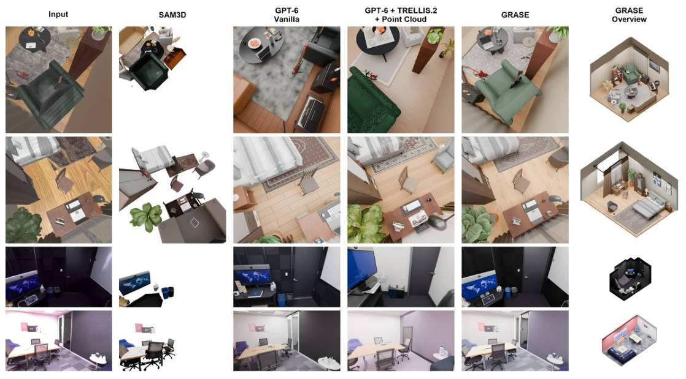
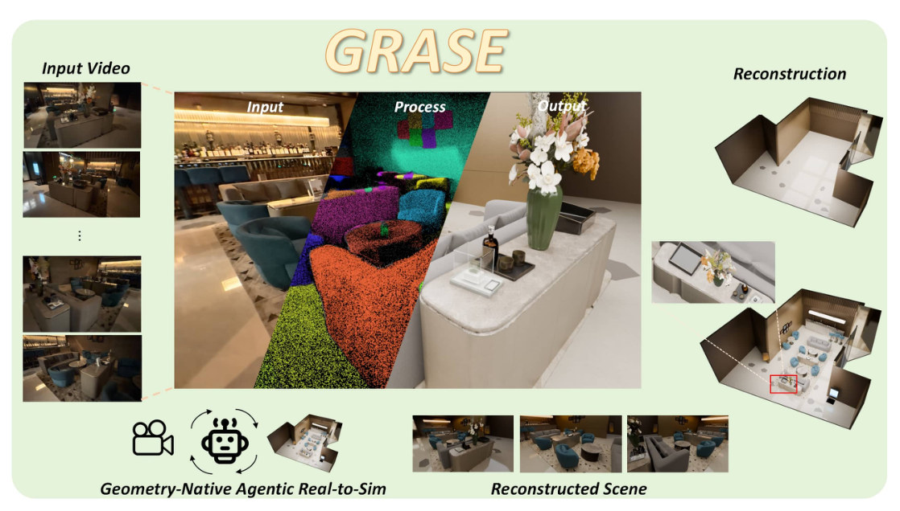
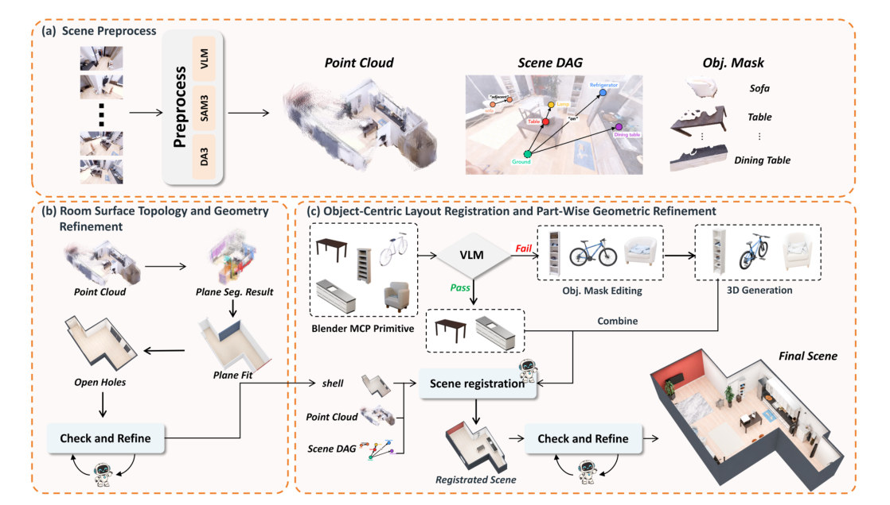
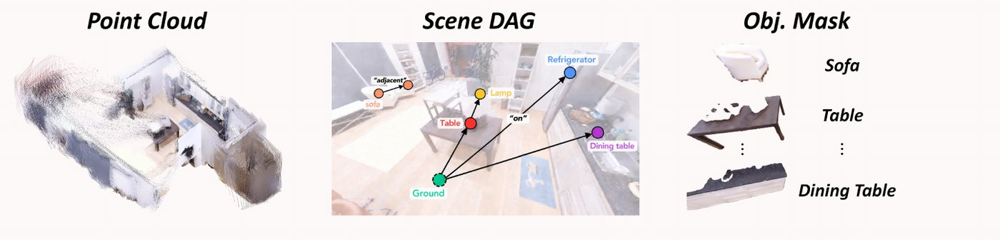
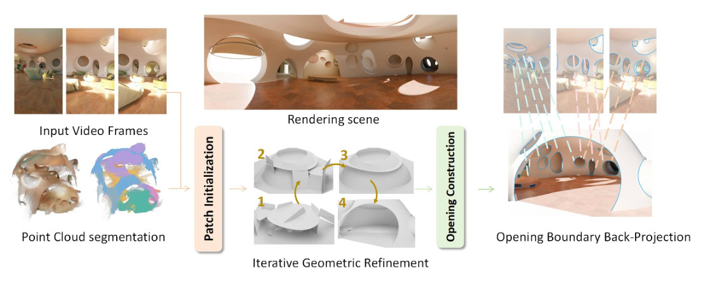
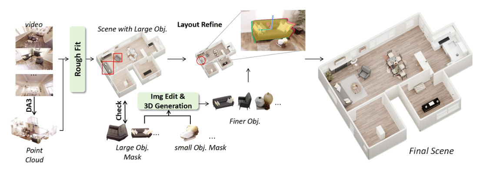
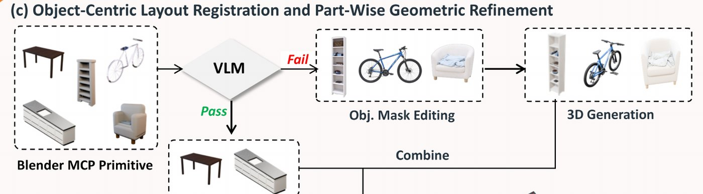
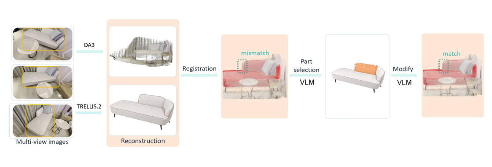
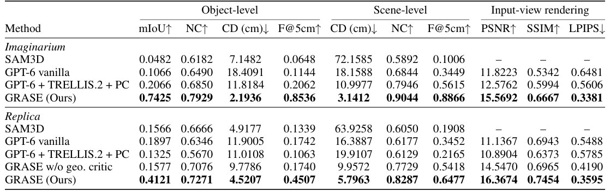
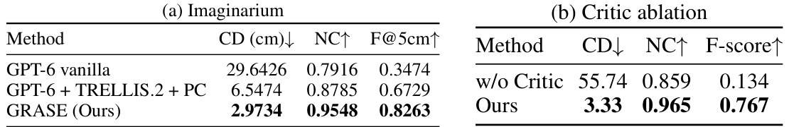

Agent-centric-real-to-sim · 归档于 2026-11-16
GRASE
GRASE: Geometry-native Real-to-sim Agentic Scene Modeling from Video
arXivPDF PDF 和 arXiv 页都没给 project page 或 code
归档到 Agent-centric real-to-sim：agent 把一段室内视频建成可编辑的 Blender 场景，全程拿原视频当对照，只改出错的部件。
TL;DR
- Problem
- 视频 → 可编辑 3D 场景的 pipeline 大多一遍过，中间估计定了就不再对照视频；把点云直接交给 GPT-6 agent 也不够。
- Idea
- 把场景拆成可拟合、可约束编辑的变量（墙面和开口、物体 transform、物体部件）。数值工具拟合，agent 只判断；每步渲染回原相机和原帧对照，只改负责的部件。
- Result
- scene-level CD：Imaginarium 3.14 cm（最强 baseline 11.00），Replica 5.80 cm（16.39）；去掉 geometric critic，Replica 回到 9.96 cm（Table 1）。没有 simulator 或机器人实验。
Problem
中间估计一旦定下就没人再对照视频，把点云直接丢给 agent 也救不回来
Running example · 后面每个 stage 都跟着它走
Fig. 2 的 L 形公寓：一段单目室内视频（静态场景），均匀抽 T 帧（Table 3：真实视频 100，仿真视频 60）。画面里有 Sofa、Table、Lamp、Refrigerator、Dining table，还有书架、自行车、单人沙发 → 想要：一个可编辑的 3D 场景，含带开口的 room shell、每个物体一个 mesh 和 world transform、物体之间的 support relation。
flowchart LR IN["室内视频
L 形公寓，T 帧"]:::example --> A1["SAM3D
逐物体重建，一遍拼好"] A1 --> AX["只有物体，没有墙和地
scene CD 63.9258 cm"]:::gap IN --> B1["GPT-6 vanilla
只看帧，直接建场景"] B1 --> BX["真实尺度和几何对不上
scene CD 16.39 cm"]:::gap IN --> C1["GPT-6 + TRELLIS.2 + PC
再给点云、相机、生成器"] C1 --> CX["在 raw 点云上判断出错
16.39 → 19.91 cm"]:::gap
数字是 Table 1 的 Replica 结果（8 个场景）；论文没有逐场景数字，也没说 Fig. 2 的公寓属于哪个数据集。SAM3D 一行是我的推断：论文没介绍 SAM3D 的做法，只给了数字和 Fig. 6（它那一列只有物体，没有墙和地）；它在 Replica 的 object CD 是 4.9177 cm（GRASE 4.5207），scene CD 却是 63.9258 cm。GPT-6 两行的数字是 §4.2 正文的两位小数，原因来自 §1 和 §4.2。

怎么读这张图
- Input 列：原视频的一帧，其余各列都和它比。
- SAM3D 列：只有几件物体浮在白底上，没有墙和地。
- GPT-6 Vanilla、GPT-6 + TRELLIS.2 + Point Cloud 列：有房间，但家具的比例、位置和原帧对不上。
- GRASE、GRASE Overview 列：同视角最接近 Input；最右是整个场景的俯瞰。
根本问题：相机、点云、生成的 mesh、摆放这些中间估计一旦定下就不再对照视频，错了也不知道是哪一步错的。 这篇的切入点：把场景拆成可拟合、可约束编辑的变量，原视频全程当对照，渲染对不上就只改负责的那个部件。
Related work
| 相关工作 | 解决什么 | 怎么解决 | 和本文的区别 |
|---|---|---|---|
| 同一问题 · 别的解法 | |||
| Agent 做 real-to-sim（本文所属） GPT-6 vanilla、GPT-6 + TRELLIS.2 + point cloud | 视频 → 可编辑场景 | agent 看帧直接建模，或再加点云、相机和 TRELLIS.2 | 几何和尺度由 agent 一次给出，没人对照视频返工 → 数值工具拟合 shell 和 mesh，agent 选表示、挑帧、验收 |
| 一遍过的组合式重建 SAM3D、Deep Prior Assembly、CAST、MIDI | 图像 → 逐物体 mesh 加布局 | 生成物体，再对齐拼装；CAST 加点云条件和物理修正 | 拼完不再回看输入 → 每步渲染回原相机，错了只改那个部件 |
| Geometric foundation models DUSt3R、MASt3R、VGGT、Fast3R | 无位姿图像 → 稠密几何和相机 | feed-forward 预测 pointmap | 输出是点，不是物体级的可编辑场景 → 拿 DA3 的点云当证据，再拟合 shell 和 mesh |
| 相似做法 · 别的问题 | |||
| Agentic 场景生成 + 反馈 SceneCraft、SAGE、SceneSmith | 文本 → 3D 场景 | designer / critic / orchestrator agent，Blender 程序，视觉和物理 critic | critic 对照的是 prompt，没有要对齐的实拍 → 沿用 SceneSmith 的三角色分工，参照物换成原视频帧 |
| VLM 的空间推理 SpatialVLM、SpatialRGPT、SpatialPIN、LayoutVLM | 让 VLM 会量距离、懂 3D 关系 | 空间监督、带深度的输入、prompt 里加 3D prior | 靠训练或提示让 VLM 自己量准 → 不训练 VLM，位置交给点云约束，VLM 只解读语义、提纠错意见 |
来源：论文 §2 Related Work 和 §4.1 的 baseline（SAM3D 只在实验里出现）。论文没有和 library 里或这一轮的其他 agentic real-to-sim 论文做对比。未另行检索。
Level 1 · Big picture
先搭房间外壳，再摆物体、按部件修；每一步都渲染回原相机，和原视频对照

怎么读这张图
- 左列 Input Video：输入视频的帧。
- 中间三联 Input → Process → Output：原帧，按 surface 和 object 着色的点云，重建后的渲染。
- 右列 Reconstruction：上面只有 room shell，下面是放好物体的完整场景；红框放大的是吧台一角。
- 底部 Reconstructed Scene：重建结果从几个视角渲染。
- 左下 Geometry-Native Agentic Real-to-Sim：相机 → 绕着箭头转的 agent → 场景，示意 agent 反复对照视频修改场景。
flowchart TD I["Input
公寓视频，T 帧"]:::example --> H["当前场景假设
shell、物体 transform、部件"] H --> R["渲染回原相机
和原视频帧对照"]:::win R -->|"对不上：只改负责的部件"| H R -->|"对上"| O["Output
可编辑 Blender 场景"]
Level 2 · Stages
6 个 stage，加一条贯穿的 agent 验收回路

怎么读这张图
- (a) Scene Preprocess：帧经过 DA3、SAM3、VLM，得到 Point Cloud、Scene DAG、Obj. Mask。对应 Stage 1。
- (b) Room Surface Topology and Geometry Refinement：Point Cloud → Plane Seg. Result → Plane Fit → Open Holes → Check and Refine，输出 shell。对应 Stage 2。
- (c) 上排：Blender MCP Primitive 交给 VLM 判断，Pass 的留下，Fail 的走 Obj. Mask Editing → 3D Generation，再 Combine。对应 Stage 3。
- (c) 下排：shell、Point Cloud、Scene DAG 一起进 Scene registration → Registrated Scene → Check and Refine → Final Scene。对应 Stage 4–6。
- 两个 Check and Refine 旁的机器人：外壳和物体两段都由 agent 验收，不过就回改。
flowchart TD S1["1 · Preprocess + inventory
点云、support DAG、mask"] --> S2["2 · Room shell
L 形外壳 + 开口"] S2 --> S3["3 · Object init
桌子 primitive
自行车 TRELLIS.2"] S3 --> S4["4 · Registration
位置、yaw、尺寸"] S4 --> S5["5 · Part-wise refine
沙发靠背拉伸"] S5 --> S6["6 · Cross-object
Lamp 贴到 Table"] V["Agent 验收回路
每个 stage 最多 3 轮"]:::win V -.-> S2 V -.-> S4 click S1 href "#stage-1" click S2 href "#stage-2" click S3 href "#stage-3" click S4 href "#stage-4" click S5 href "#stage-5" click S6 href "#stage-6" click V href "#stage-all"
点击 stage 展开 Level 3 细节。绿框的验收回路贯穿 Stage 2–6，图里只画了通向外壳和物体两段的入口。
Level 3 · Details
每个 stage 的细节
Stage 1 Preprocess + inventory 视频 → 点云、相机、surface 和物体清单、support DAG、逐物体点云
- Why：后面所有拟合都要两样东西：带尺度的 3D 证据，和一份“场景里有什么、谁托着谁”的清单。
- How：均匀抽 T 帧，Depth Anything 3（DA3）联合估计每帧 depth、confidence、内参和相机位姿；可信像素反投影，合成场景点云。
- GPT-6 VLM 列 inventory：墙、地、天花板这些 surface，它们的相邻关系，每面墙上的 opening；每个物体的类别和逐帧 2D box，跨帧归并成 instance。
- VLM 把 large object（桌子、沙发）和 small object（杯子）分开，并从可见接触、相对位置、遮挡推出 support DAG。
- SAM 3 分割每个 surface 和物体。物体 mask 先腐蚀（3×3），只留 confidence 高于 max(1.2, 该 mask 内的 35% 分位数) 的深度，每个视角最多 650 个点（Table 3）；surface 的点按 inventory 的跨帧对应合并。
flowchart LR F["T 帧
100 / 60"]:::example --> D["DA3
depth、相机、点云"] F --> I["GPT-6 VLM inventory
surface、物体、DAG"] I --> M["SAM 3 mask
逐 surface / 物体点云"] D --> M

怎么读这张图
- Point Cloud：DA3 的深度反投影后合起来的整套公寓点云。
- Scene DAG：画在一帧上的 support 图，箭头从托着的一方指向被托着的一方；Refrigerator 那条边上标着 “on”。
- Obj. Mask：每个物体 mask 里的深度抬成的点云（Sofa、Table、Dining Table），只有看得见的那一面。
Running example 在这一步
Scene DAG：Ground → Table → Lamp，Ground → Refrigerator，Ground → Dining table；sofa 和旁边的物体之间标着 “adjacent”。这三样是后面的输入：点云给 Stage 2 拟合墙面，逐物体点云给 Stage 3–4 摆物体，DAG 定 Stage 6 的处理顺序。
Stage 2 Room shell：topology 和 geometry surface 点云 + 原帧 → 封闭、带开口、可编辑的 shell mesh
- Why：每面墙只按自己的点裁剪，墙角处会留缝或重叠；弧形墙和门窗更不是一个平面能表示的。
- How：VLM 先决定每个 surface 用 plane 还是 connected patches，再交给数值拟合（perceive-then-reconstruct）。
- Plane：RANSAC 初始化，SVD 重拟合。三个互相相邻的面求交得到墙角；相邻的墙共用同一个墙角，改一个平面，墙角跟着重算，交界处不会开缝。
- 联合优化所有平面（Eq. 2），相机和相邻关系固定：
| Eq. 2 的三项 | 管什么 |
|---|---|
| 点到平面的距离 | 平面贴住这面墙自己的点云 |
| junction 像素到交线投影的距离 | VLM 在原帧里标出墙和墙、墙和地的交界线；两个平面的交线投到这一帧后要压在这些像素上 |
| 离初值的距离（有上限） | 每个参数只能在初值附近小范围移动 |
- Patches（弧形墙）：两种 patch：绕房间一圈的 periodic loft，和在参考平面上加二次偏移的 local quadratic displacement field；最小二乘拟合。VLM 指定相邻 patch 是 sharp（求交后裁剪）还是 smooth（平滑混合）。
- Openings：门、窗、壁龛、通道做成几何。VLM 在原帧里描出可见的 rim，判断后面是 rear surface 还是 open passage；过 rim 的 ray 和宿主面求交得到 3D rim，挖洞并沿 rim 建侧面。
- 被遮住的部分（比如窗帘后的墙）：按拟合面延伸到交界处，标成 inferred，不算 observed。
- 完成的 shell 从原相机渲染；剩下的差异交给验收回路。
flowchart TD P["VLM 选表示
plane 还是 patches"] --> A["Plane
RANSAC + SVD，共用墙角"] P --> B["Patches
periodic loft / quadratic"] A --> J["联合优化
点到面 + junction 像素"] J --> O["Openings
rim 反投影，挖洞建侧面"] B --> O O --> C["渲染回原相机
不一致就进验收回路"]:::win

怎么读这张图
- 左：Input Video Frames，和按 surface 着色的 Point Cloud segmentation。
- Patch Initialization → 中间 1、2、3、4：Iterative Geometric Refinement，按箭头 1 → 2 → 3 → 4，patch 一轮轮贴近圆顶房间的形状。
- 上方 Rendering scene：这个房间的一张带纹理的渲染全景。caption 说迭代靠几何证据加上“原帧 vs 渲染”的比较；图里没画它和 1–4 的连线。
- Opening Construction → 右：Opening Boundary Back-Projection，原帧里描出的开口边界（蓝线）沿 ray 投回曲面，挖出圆窗。
Running example 在这一步
公寓的墙都是平面，走 Plane 这条路：Point Cloud → Plane Seg. Result → Plane Fit → Open Holes（Fig. 2b），得到 L 形 shell。要是换成 Fig. 3 的圆顶房间，就走 Patches 这条路。
Stage 3 Object initialization 每个物体的帧和点云 → 一个初始 mesh
- Why：GPT-6 用 primitive 搭的物体干净、好编辑，但对不上细致的真实形状；TRELLIS.2 生成的 mesh 细，却很难用代码改（§1）。两条路各用在合适的地方。
- How：large object 由 VLM 通过 MCP 直接在 Blender 里用简单 primitive 搭主要部件；位置和大小取自该物体点云的中心和范围，朝向从帧里认得出的部件读（比如椅背在哪一边）。
- VLM 判断搭出来的形状：够像就留用；不像就选 3 张清晰互补的帧，用 image editing 补全被遮挡的物体，每张图生成 1 个 TRELLIS.2 候选，渲染回原相机后留最像的。
- small object 跳过 primitive，直接用 TRELLIS.2 生成。
flowchart TD L["Large object"] --> P["Blender MCP primitive
VLM 用 primitive 搭主要部件"] P -->|"VLM：够像"| K["留用
桌子、长柜"] P -->|"VLM：不像"| T["3 帧补全 + TRELLIS.2
书架、自行车、单人沙发"] S["Small object"] --> T

怎么读这张图
- 左：video 经 DA3 得到 Point Cloud；Rough Fit 得到 “Scene with Large Obj.”，large object 先用 primitive 搭好，红框是要检查的。
- Check ↔ Large Obj. Mask：VLM 拿原视角对照，形状或结构不对的才换掉。
- Img Edit & 3D Generation：不合格的 large object 和所有 small Obj. Mask 走图像补全加 TRELLIS.2，得到 Finer Obj.。
- Layout Refine：放大图里的沙发叠着黄色填充、红绿轮廓和一组坐标轴。按 A.3，VLM 调整时看的 overlay 会标出“只有渲染盖住”和“只有观测盖住”的区域（哪种颜色对应哪种是我的推断）；调完得到 Final Scene。

Running example 在这一步
Blender MCP Primitive 搭了 5 件：桌子、书架、自行车、长柜、单人沙发。VLM 判 Pass：桌子、长柜；Fail：书架、自行车、单人沙发，这三件走 Obj. Mask Editing → 3D Generation，再和通过的两件 Combine。
Stage 4 Registration 初始 mesh + 物体点云 + 原帧 → world transform（位置、yaw、尺寸）
- Why：物体点云只盖住看得见的一面，还有噪声；只靠 ICP，尺寸和位姿都可能偏。
- How：只改 transform，不改 mesh 和相机。直立家具的底面高度、roll、pitch 由 support 定；能调的是水平平移、绕 support 法向的 yaw、三个方向的尺寸。
- 每个参数限制在初值附近：平移 ±0.18 × 最长边，yaw ±0.45 rad，尺寸 0.75–1.25 倍（Table 3）。
- ICP：物体点云对到 mesh 表面的采样点，soft-L1 抗离群点，最多 25 轮。
- VLM-guided adjustment：agent 选 3 帧，尽量从不同侧看到物体；同相机渲染，叠上“只有渲染盖住”和“只有观测盖住”的 overlay，VLM 调尺寸和位姿。
- Silhouette refinement（Eq. 9）：在物体可见的所有帧上最小化下表四项。mask 不可导，所以用有界的 coordinate search：3 级步长（1、0.5、0.25），每级最多 4 轮。
- Final check：在 Blender 里应用 transform 再渲染，量 point-to-surface 距离、看 overlay，通过才保留。
| Eq. 9 的四项 | 管什么 | 权重（Table 3） |
|---|---|---|
| 1 − IoU（观测 mask，渲染 mask） | 轮廓重合；渲染 mask 只算没被场景里别的东西挡住的部分 | 1 |
| 两条轮廓边界的平均距离 | 边界对齐 | 0.4 |
| 最差一帧的 1 − IoU | 不让一个对得很差的视角被平均掉 | 0.35 |
| 点云到 mesh 表面的距离 | 3D 上也贴住 | 0.12 |
flowchart TD A["ICP
点云对到 mesh 表面，最多 25 轮"] --> B["VLM-guided adjustment
3 帧 + overlay，调尺寸和位姿"] B --> C["Silhouette search
轮廓 + 边界 + 最差帧 + 点云"] C --> D["Final check
Blender 重渲染，量距离"]:::win
Running example 在这一步
自行车的 TRELLIS.2 mesh 出来时在它自己的 canonical frame 里：先对齐局部轴和接触面，用 Stage 3 的 primitive 模型当位置、朝向、大小的参照摆进公寓，再 ICP 到自行车的点云，然后按 3 帧调整。桌子的 primitive 本来就是在原位搭的，直接进入调整。
Stage 5 Part-wise geometric refinement 已注册的 mesh + 原帧 → 局部改过的 mesh
- Why：生成的 mesh 常把几个部件并成一块（沙发和靠垫），一个整体 transform 配不齐所有部件。
- How：VLM 对比渲染和原帧，找出对不上的部件。
- Agent 在几张渲染里标出这个部件的可见区域；过这些区域的 camera ray 和 mesh 求交，选中对应的三角面，成一个 vertex group。mesh 不切开。
- 位置错：这个部件单独对到自己的点，其余不动。比例错：沿一条局部轴拉伸或收缩（Eq. 4）。
- 改完从原相机再渲染：部件更贴合、没弄坏别处、没引入严重穿插才保留，否则恢复原样。
| Eq. 4 的符号 | 是什么 | 在沙发靠背上 |
|---|---|---|
| v | 部件上的一个顶点 | 靠背 mesh 上的点 |
| a | 拉伸的方向（部件的一条局部轴） | 靠背要变宽或变窄的方向 |
| xfix | 不动的一端：要保持对齐或连接的地方 | 靠背已经对上的那一侧 |
| xmov | 要移动的一端：需要修正的那一侧 | 靠背超出观测的那一端 |
| Δ | 要改的长度，带正负号：正的拉长，负的缩短 | A.4 举的例子是“太宽的靠背，座面和扶手已经对上”，那就是负的（收窄）；agent 从原帧边界和可靠深度估出来，论文没给数值 |
| S(τ) = 3τ² − 2τ³ | 从 0 平滑升到 1 的权重 | 让改动渐变进不动的部分 |
- Eq. 4 用话说：顶点离不动的一端越远、越靠近要移动的一端，沿拉伸方向移得越多；最远处正好移动要补的长度。写成式子是 v′ = v + S(τ(v))·Δ·a，τ(v) 是顶点在两端之间的位置，取 0 到 1。
- “在沙发靠背上”一列里哪一端固定、哪一端移动，是我对 Fig. 5 的读法；论文只说 Fig. 5 的靠背比例不对（§3.2）。
flowchart TD A["VLM 找出对不上的部件
沙发靠背"] --> B["Ray-cast 选中
成一个 vertex group"] B --> C["位置错
单独对到自己的点"] B --> D["比例错
沿局部轴拉伸（Eq. 4）"] C --> E["重渲染
更贴合且没弄坏别处才留"]:::win D --> E

怎么读这张图
- Multi-view images：三张含这张沙发的帧，黄框是它的 2D box。
- Reconstruction：上面是 DA3 的点云，下面是 TRELLIS.2 生成的 mesh。
- Registration 之后：红色点云叠在 mesh 上，虚线框 mismatch 处是靠背。
- Part selection（VLM）：靠背被选中，橙色。
- Modify（VLM）：拉伸之后，同一处标成 match。
Running example 在这一步
公寓里的 Sofa 走到这一步，用 Fig. 5 的沙发来看（论文没说两张图是不是同一个场景）：整体注册后靠背 mismatch → 选中靠背 → 沿局部轴拉伸 → match；座面和扶手不动。
Stage 6 Cross-object refinement 各自放好的物体 + support DAG → 接触正确、互不穿插的场景
- Why：前面每个物体是单独放的，物体之间的关系还没人管：电脑可能浮在桌面上方，相邻物体可能互相穿插。
- How：按 support DAG 的顺序处理，先 support，后它托着的物体；不同 support 上的物体互不影响。
- 物体沿 support 法向平移，直到底面碰到 support 的 mesh；在接触区域采几个点，查有没有悬空或穿透。
- 挂在墙上和吊着的物体，固定在观测到的 attachment 区域。
- 相邻物体查穿插；每次修正都由 agent 对照原帧确认。
- support 后来被改了，它托着的物体全部重查。
flowchart TD A["按 support DAG 排序
Ground → Table → Lamp"] --> B["沿 support 法向平移
底面碰到 support 的 mesh"] B --> C["接触区域采样
查悬空和穿透"] C --> D["相邻物体查穿插
agent 对照原帧确认"]:::win D -.->|"support 变了：重查"| A
Running example 在这一步
Ground → Table → Lamp：先把 Table 贴到地面，再把 Lamp 贴到 Table 的 mesh 上。Table 之后要是被挪动，Lamp 重查。
Stage 2–6 Agent 验收回路 当前场景 + 原视频帧 → 接受这次修改，或回滚
- Why：数值工具算得准，但不会判断该用哪种表示、看哪几帧、哪个部件错了、结果像不像视频（Appendix A.6）。
- How：一个 tool-using VLM agent 按一份可复用的 skill specification 干活。它规定 stage 的依赖、每个 stage 能用的工具、候选结果的验收标准。
- Agent 不直接产出几何，只发 tool call：抽帧、DA3、image editing、TRELLIS.2、Blender 操作（MCP）。shell 拟合、注册、mesh 测量、mask 比较由数值工具算。
- 论文沿用 SceneSmith 的 design–critique–orchestration，把这个 agent 的工作分成三个角色：
| 角色 | 做什么 |
|---|---|
| Construction | 看视频、挑信息量大的视角，调建模和生成工具：初始化 shell、选要优化的参数、准备生成输入、比较候选 asset、调摆放 |
| Verification | 同相机下把原帧和 textured、textureless 渲染比；加 extra / missing 区域的 overlay，量 mask overlap、boundary distance、point-to-surface distance。刚性的主体结构要求边界对上，软的或复杂的部件看整体体积、颜色和布置；每个差异定位到一个部件 |
| Orchestration | 候选场景改善了被诊断的差异、别的视角又不退步，才接受；否则恢复上一个 accepted state |
flowchart TD S["当前 accepted 场景"] --> V["Verification
同相机渲染 vs 原帧，加 overlay"]:::win V --> L["差异定位到一个部件
映射到一种操作"] L --> K["Construction
改出候选场景"] K --> O["Orchestration
改善且别的视角不退步？"]:::win O -->|"是"| ACC["接受
存成新的 accepted state"] O -->|"否"| RB["回滚
恢复上一个 accepted state"]
| Verification 发现的差异 | 映射到的操作 |
|---|---|
| pose、scale 错 | constrained transform（Stage 4） |
| 局部形状错 | part-wise deformation（Stage 5） |
| shell 对不上 | surface refitting（Stage 2） |
| 结构错 | geometry correction，或换一个候选（Stage 3） |
| 外观错 | material adjustment |
- 硬规则：总误差更低，也不能盖过缺结构、严重穿插或 support 错误。
- 参照物只有原帧：image editing 补全的图只用来生成候选，不当证据。
- 证据不清楚时：agent 先回视频里找更清楚或互补的视角，再动手改。
- 顺序：shell 通过验收之后才开始建家具。
- 预算：每个 stage 最多 3 轮 revision（Table 3）。每次 review 都记下差异和采取的操作。
Running example 在这一步
沙发那一轮：Verification 发现靠背边界对不上，定位到靠背这一个部件，映射到 part-wise deformation；Construction 拉伸靠背得到候选；Orchestration 在互补视角里确认更贴合、座面没被弄坏，接受并存档。
Recap：例子覆盖了论文的哪些 idea
| 论文里的 idea | 例子里在哪体现 |
|---|---|
| 原视频全程当 standing reference | Stage 2–6：每次修改都渲染回原相机，和原帧比 |
| VLM inventory 和 support DAG | Stage 1：Ground → Table → Lamp |
| 共用墙角的 plane shell，按 junction 像素拟合 | Stage 2：公寓的 L 形外壳 |
| 弧形墙用 patches，开口做成几何 | Stage 2：换成 Fig. 3 的圆顶房间 |
| primitive 优先，不像再用 TRELLIS.2 | Stage 3：桌子、长柜留用；书架、自行车、单人沙发重新生成 |
| 三步注册：ICP → VLM → silhouette search | Stage 4：自行车 mesh 摆进公寓 |
| Part-wise refinement | Stage 5：沙发靠背拉伸 |
| Cross-object refinement | Stage 6：Lamp 贴到 Table，Table 动了就重查 |
| 接受或回滚、硬规则、最多 3 轮 | Stage 2–6 的验收回路：沙发靠背那一轮 |
| geometric critic 值多少 | Results E4：例子所在的整体数字，不是单个场景 |
Results
Table 1 和 Table 2a 的每个指标都是 GRASE 最好；拿掉 geometric critic，Replica scene CD 从 5.80 回到 9.96 cm；全文没有 simulator 或机器人实验
比的都是几何误差和渲染误差，没有成功率、耗时或成本。E1 整体对比 → E2 给 agent 点云和生成器够不够 → E3 外壳单独评 → E4 去掉 critic。定性对比是 Problem 里的 Fig. 6。
E1和三个 baseline 比，物体和场景的几何谁更准？§4.2 · Table 1

- 说明什么
- 几何更准，渲染也更接近输入。scene CD：Imaginarium 3.14 cm，最强 baseline（GPT-6 + TRELLIS.2 + PC）11.00，降 71.4%；Replica 5.80 cm，最强 baseline（GPT-6 vanilla）16.39，降 64.6%。object mIoU 0.7425 和 0.4121，baseline 最高 0.2066 和 0.1897。
- 在故事里
- 主结论：先感知拓扑、再用几何拟合、全程对照视频，比 agent 直接转换准。
- 指标
- 几何：Chamfer Distance（cm）、normal consistency、F-score@5cm。物体一致性：instance mIoU。渲染：从输入相机渲染，和参考图算 PSNR、SSIM、LPIPS。object-level 的分母是全部 GT 物体数，没重建出来的也算进去。
- 怎么评测
- 8 个 Replica 场景 + 15 个 Imaginarium 场景，每个方法都跑完全部场景。
- Baseline：SAM3D；GPT-6 vanilla（只看图）；GPT-6 + TRELLIS.2 + point cloud。论文注明各方法的生成输入和对齐 protocol 不同。
- SAM3D 没有渲染指标：它交付的 GLB 没有灯光和 world setup。
- Replica 上 SAM3D 的 object CD 4.9177 cm 接近 GRASE 的 4.5207 cm，差距主要在 mIoU（0.1566 vs 0.4121）和 scene-level。
- 没说：跑了几次、方差、耗时、VLM 调用次数、baseline 的 prompt；两个数据集都没给引用。
- 模型名不统一：摘要和 §1 说 baseline 用 GPT6-Astra，§4 叫 GPT-6；GRASE 自己的 VLM 写的是 “GPT-6-based”（§3）。论文没说这是不是同一个模型。
E2把点云、相机和 TRELLIS.2 交给通用 agent，够不够？§4.2 · Table 1 的两行 GPT-6
| Scene-level CD (cm) ↓ | Imaginarium | Replica |
|---|---|---|
| GPT-6 vanilla | 18.16 | 16.39 |
| GPT-6 + TRELLIS.2 + point cloud | 11.00 | 19.91 |
| GRASE | 3.14 | 5.80 |
由 Table 1 的数字整理，按 §4.2 正文的两位小数。
- 说明什么
- 不稳：一个数据集变好，另一个变差。Imaginarium 从 18.16 降到 11.00 cm，Replica 从 16.39 升到 19.91 cm；渲染指标同向。
- 在故事里
- 支撑 §1 的论点：只把 3D 观测交给 agent 不够，它在 raw 点云上经常判断错几何、尺度和空间关系。
- 指标
- scene-level CD，定义同 E1。
- 怎么评测
- 场景同 E1。两行的区别只在 agent 能不能用点云、相机信息和 TRELLIS.2。
- GRASE 自己也用 GPT-6-based VLM（§3），工具里也有 DA3 点云和 TRELLIS.2，所以和这一行的差距主要来自流程：数值拟合加上对照视频的验收（我的读法）。
- 没说：两个 GPT-6 baseline 用的工具和 prompt 细节。
E3房间外壳单独评，谁更准？§4.2 · Table 2a

- 说明什么
- 外壳更准。Imaginarium 上 CD 2.97 cm；GPT-6 + TRELLIS.2 + PC 是 6.55（降 54.6%），GPT-6 vanilla 是 29.64。NC 0.955，F@5cm 0.826。
- 在故事里
- 证明 Stage 2 本身有用：外壳和物体分开算，功劳不会混在一起。
- 指标
- 只对 architectural shell 算 CD、NC、F@5cm。
- 怎么评测
- 只报了 Imaginarium；Replica 的外壳对比没有。
- SAM3D 不在这张表里。
E4去掉 geometric feedback 会怎样？§4.3 · Table 1 的 w/o geo. critic 行 · Table 2b
| 指标 | w/o critic | GRASE | 变化 |
|---|---|---|---|
| Replica object CD (cm) ↓ | 9.78 | 4.52 | 降 53.8% |
| Replica scene CD (cm) ↓ | 9.96 | 5.80 | 降 41.8% |
| Replica object mIoU ↑ | 0.1577 | 0.4121 | |
| Replica 输入视角 PSNR (dB) ↑ | 14.55 | 16.37 | |
| 7 个场景的 shell CD ↓（单位见下） | 55.74 | 3.33 | 降 94.0% |
| 7 个场景的 shell NC ↑ | 0.859 | 0.965 | |
| 7 个场景的 shell F-score ↑ | 0.134 | 0.767 |
由 Table 1、Table 2b 和 §4.3 正文的数字整理。
- 说明什么
- 几何反馈让误差明显下降，外壳上最多。Replica object CD 降 53.8%，scene CD 降 41.8%；7 个场景的 shell CD 降 94.0%。去掉 critic 的 GRASE，Replica scene CD 9.96 cm 仍好过两个 GPT-6 baseline（16.39、19.91），但 object mIoU 0.1577 低于 GPT-6 vanilla 的 0.1897（这两句是我从 Table 1 读出来的）。
- 在故事里
- 把功劳从整个 agent workflow 里拆出来：其余流程不动，只拿掉 point-cloud 加 hard-crease critic。
- 指标
- 前四行同 E1。Table 2b 的 CD 单位是 10⁻² source-coordinate units，F-score 阈值是 0.05 source-coordinate units，不能和 Table 2a 的 cm 直接比。
- 怎么评测
- 物体和场景的消融只在 Replica 上做，Imaginarium 没有这一行。
- 外壳消融是 7 个场景的平均，先做 upright rigid alignment、scale 固定；论文没说是哪 7 个场景。
- “hard-crease critic” 这个名字只在 §4.3 和 Appendix A.7 出现，方法部分没有单独定义。可能指点到面距离加上交线、边界（crease）是否对齐这类几何检查，比如 Eq. 2 的 junction 项和 A.6 的“刚性结构边界要对上”（我的推断）。
- 说法不一致：§1 说消融去掉的是 perceive-then-reconstruct 范式，§4.3 和 Table 2b 去掉的却是这个 critic。
Limits
局限和开放问题
- 论文自述（§5）：遮挡严重、视频证据不足的区域，只能靠延伸拟合面或生成先验补全，标为 inferred。
- 论文自述：inventory、support graph、验收都靠 VLM 判断；早期错误（漏掉 junction、support 关系错）在渲染证据模糊时会一直留着。
- 论文自述：只做静态场景的几何和布局；articulation、材质、物理属性都没恢复。
- 我的观察：标题是 real-to-sim，但全文没有把场景放进任何物理 simulator，也没有机器人实验；“suitable for simulations” 没有实验支撑。
- 我的观察：没报告耗时、VLM 调用次数和成本。论文把“用 learned geometric critic 替换部分 VLM 验证来降成本”列为 future work。
- 我的观察：回路里的验收只看建场景用的同一段视频；独立的检验只有数据集的 GT 几何。
For Agent-centric real-to-sim
对我们有什么用
- r2s-lite 的验收可以加硬否决。GRASE 规定：总误差更低，也不能盖过缺结构、严重穿插或 support 错误，不过就回滚到上一个 accepted state。锅盖那一集第 9 次过了宽松规则而场景是错的，缺的正是这一条；“support 变了就重查它托着的物体”也对得上锅和锅盖的关系。
- real2sim-anything-indoor 可以搬 Stage 2 和 Stage 3。相邻墙共用墙角，改一面墙不会开缝；用原帧里的 junction 像素拟合平面；门窗做成几何。大件家具先用 Blender MCP primitive，不像再换 TRELLIS.2。
- 别指望“把点云给 agent”。Replica 上 GPT-6 + TRELLIS.2 + point cloud 比只看图还差（19.91 vs 16.39 cm）。分工是数值工具拟合，agent 只判断。另外 GRASE 停在几何：WorldClaw 进 Genesis 需要的质量、摩擦、关节，这篇都没有。